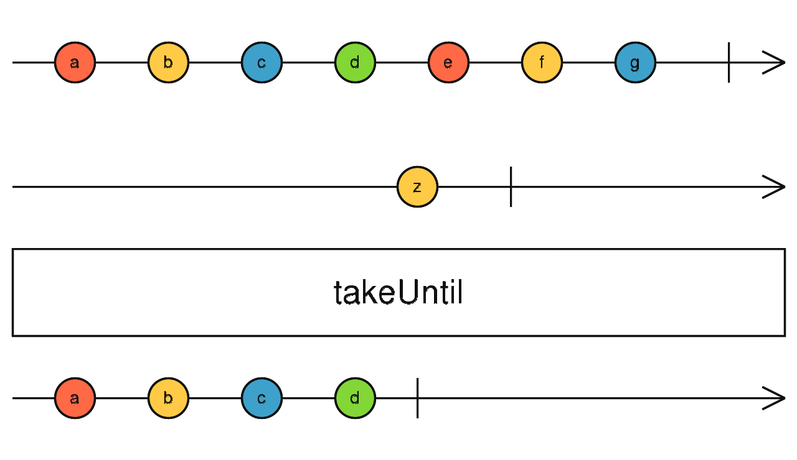

takeUntil
参数列表：
-
notifier
Observable
控制结束的observable,它一旦发射值，或者complete,那么对source的订阅终止，返回complete
返回值: Observable <T>
珠宝图:

功能说明:
- takeUntil 同时订阅1个Source和1个notifier共2个Observable,返回一个新的Observable.如果notifier发射值或者complete,则直接complete
备注事项:
点击不同按钮查看不同demo 代码效果